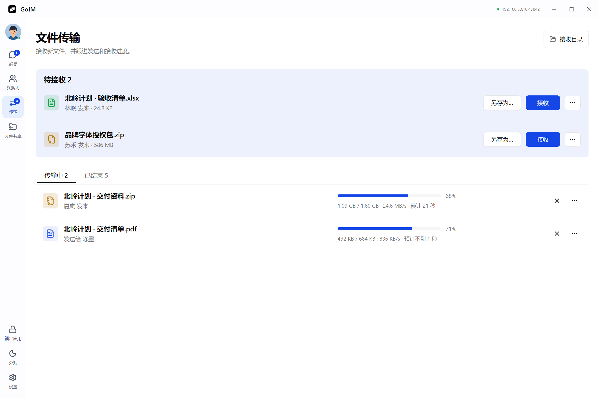
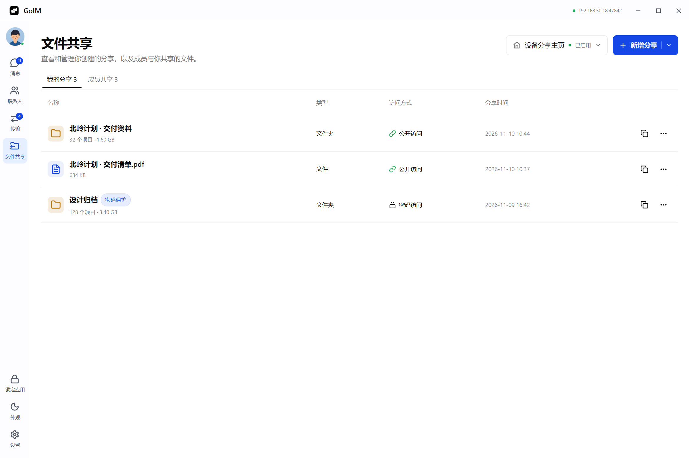

消息和群聊
文字、表情与图片直接发送。支持群聊邀请、成员管理、搜索和离线补发。
原生桌面 · 开源 · 局域网直连
聊天、传文件、分享资料，都在一个原生窗口里。设备直接连接，聊天记录留在本机。
主要功能
文字、表情与图片直接发送。支持群聊邀请、成员管理、搜索和离线补发。
从待接收、传输中到已完成，一个列表跟进进度。普通附件支持另存、重试与续传。
为文件和文件夹生成链接或二维码，可设置密码。设备主页还可以接收浏览器上传。
自由框选，拖动边角调整区域。完成标注后，按原始像素复制。
聊天记录保存在本机。GoIM 之间通过 TLS 通信，应用锁可保护窗口访问。
简体中文与英语，明亮和暗黑两种外观。支持托盘、通知和自定义快捷键。
界面预览
01 · 联系人
在同一处查看在线状态、个人资料和群聊。自动发现受限时，可直接输入局域网 IP。

02 · 文件传输
待接收文件位于顶部，正在进行和已结束的任务分别归档。

03 · 文件共享
选中文件或文件夹后即可复制链接。访问者可逐层浏览、下载文件，或从设备主页上传。
兼容进度
GoIM 提供基础 IPMSG 兼容。在同一局域网内，自动发现受限时可使用对方的 IPv4:2425。
初步实测
Windows 与 VMware 间已验证发现、双向文字和普通单文件传输。图片可作为文件发送。内网通的内嵌图片、截图、表情、原生共享及群聊尚未实现互通。
协议测试
扩展报头、中文编码、发现与标准 IPMSG 文件传输已有自动化覆盖。飞秋真实客户端和不同版本仍待实测。
下载
下载 GoIM 0.1.1。安装包按平台和架构提供，MSI 和压缩包可在发布页获取。